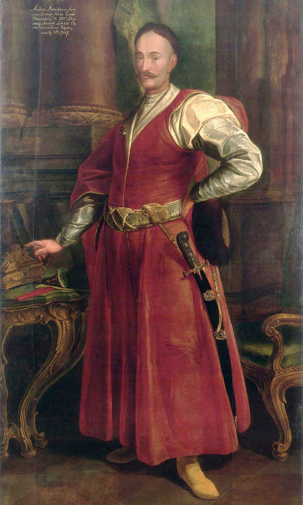
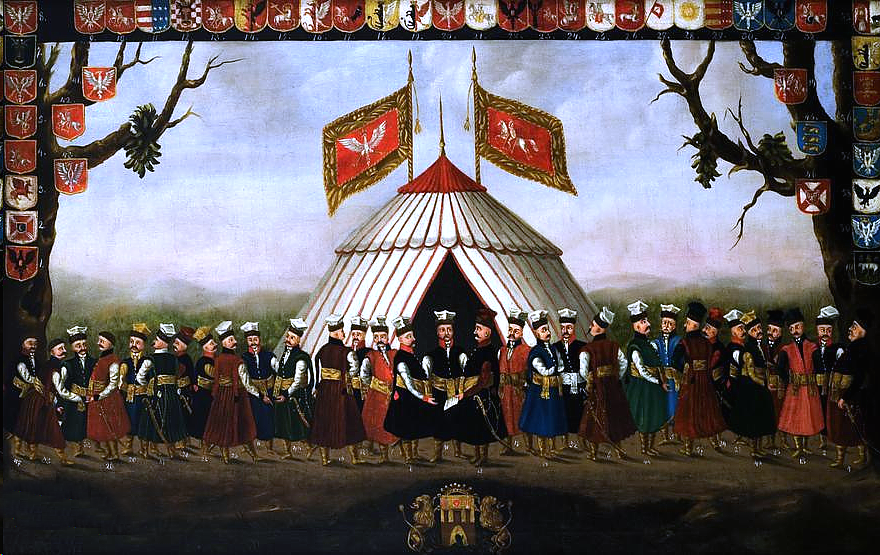

Jaki strój powinni nosić uczniowie wg mnie

Według mnie strój uczniowski powinien składać się z
Strój męski
- żupan
- kontusz
- pas kontuszowy
- spodnie (hajdawery)
- buty (baczmagi)
- czapka: kołpak polski lub konfederatka
- szabla (karabela)
Strój damski
- kontusik
- suknia
- spódnica
- trzewiki
- czapka: kołpaczek lub konfederatka

Według mnie to dobry pomysł jako że nasza szkoła stawia na tradycje